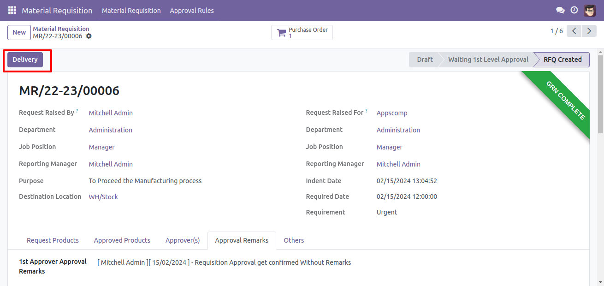

Material Requisition Form with Automated Department and Designation Selection:
The Material Requisition form includes fields to select the requester and the requested
department, with designations populated automatically based on the selections. Users can specify
the purpose, emergency type, and required date. Additionally, the form allows users to list
requested raw-material product items along with their quantities. Upon completion, users can
save the screen to initiate the requisition process.
Material Requisition Approver Master Configuration:The Material Requisition Approver
Master allows for configuring approval workflows by defining the types of approvers, setting the
number of required approvers, and specifying authorized users for approval. The system
accommodates up to five levels of approvers for comprehensive approval processes.
Configuration of Material Requisition Approvers in Form:
The Material Requisition form allows users to select configured approvers, displaying the number
of approvers and a user list once chosen.
Material Request Notification and Verification Process:
The process begins with clicking the "Request to Store Approve" button to notify the store team
about the material request. The form then displays a ribbon status as "Store to Verify." After
verifying the material, the store updates remarks via a popup window, upon which the form
updates the ribbon status to "Store Verified.
Approval Process Integration for Material Requisitions:
Material requisitions undergo an approval process initiated by the "Submit to Approval" button
post verification by the store team. This triggers the "Waiting for Approval" status update
along with the display of approve, reject, and cancel buttons. The form and tree view of each
requisition are shown based on selected material approvers. Approvers can take action via a
popup window, with their remarks, username, date, and time captured in the approver's remarks
tab for each requisition.

Stock Availability Update Upon Check Availability Button Click:
Upon clicking the "Check Availability" button, the system updates the current stock status of
selected products, displaying either "Available" or "Not Available" as ribbon status on the
screen.

RFQ Creation for Out-of-Stock Items in Material Requisitions Form:
Clicking the "Request to RFQ" button updates the status of the current material requisition
form, enabling the creation of a purchase order via a popup window to select a supplier for
out-of-stock items. Once submitted, the created RFQ count is displayed in a smart button within
the material requisitions form.

Integration of Purchase RFQ and GRN Confirmation with Stock Update Tracking:
By opening the Purchase RFQ and confirming it, as well as completing the GRN, the stock is
updated. Each confirmation and GRN status (pending or completed) is then updated in the material
requisition screen for easy tracking.
Integration of Dispatch Process with Stock Availability and Material Requisition Completion
Tracking:
Upon completion of the GRN for a purchase, triggering the "Check Availability" button updates
stock availability. The system then displays a "Delivery" button for dispatching items. Upon
triggering the delivery button, an outgoing delivery is generated. Clicking on the shipping
smart button completes the dispatch process. The material requisition screen is updated to
"Delivery Completed," marking the completion of the requisition and enabling the requester to
receive the stocks.

Material Requisition PDF Report
Material Requisition Wizard and Excel Report